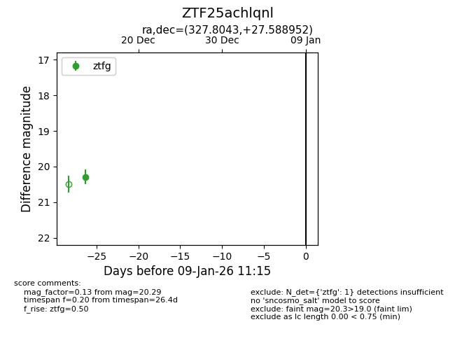
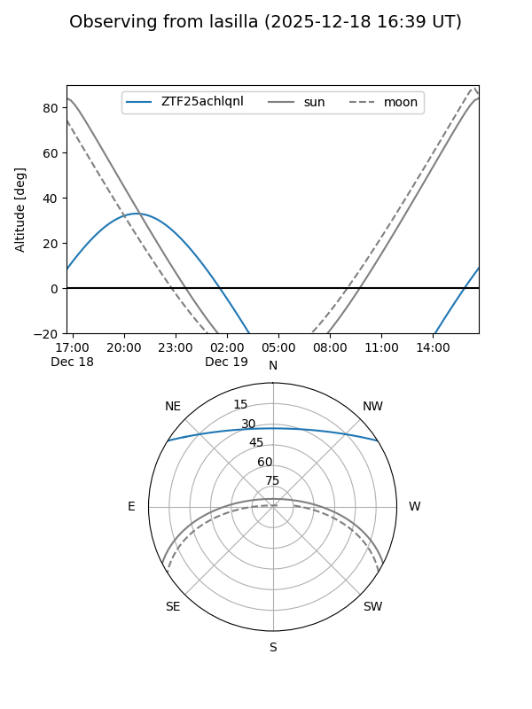
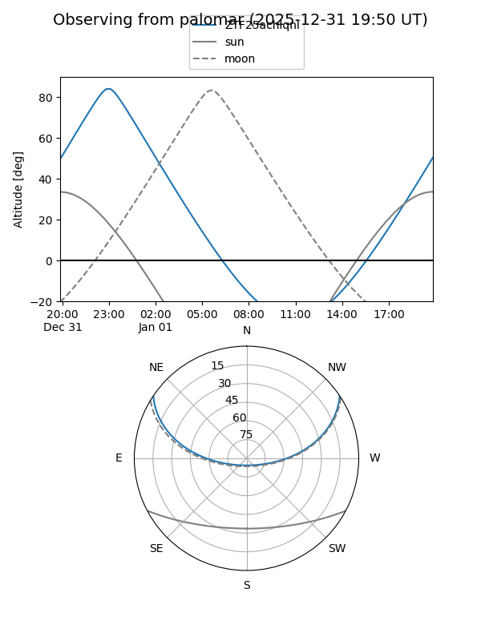

ZTF25achlqnl
Target ZTF25achlqnl at 2025-12-31 18:00
Aliases and brokers:
FINK: link
Lasair: link
ALeRCE: link
alt names
ZTF25achlqnl (ztf,fink_ztf)
Coordinates:
equatorial (ra, dec) = 327.8043,+27.58895
equatorial (HMS+DMS) = 21:51:13.04,+27:35:20.23
galactic (l, b) = (80.9717,-20.24556)
Flags:
Photometry:
last ztfg=20.29
1 ztfg detections
Lightcurve

Visibility


Additional plots